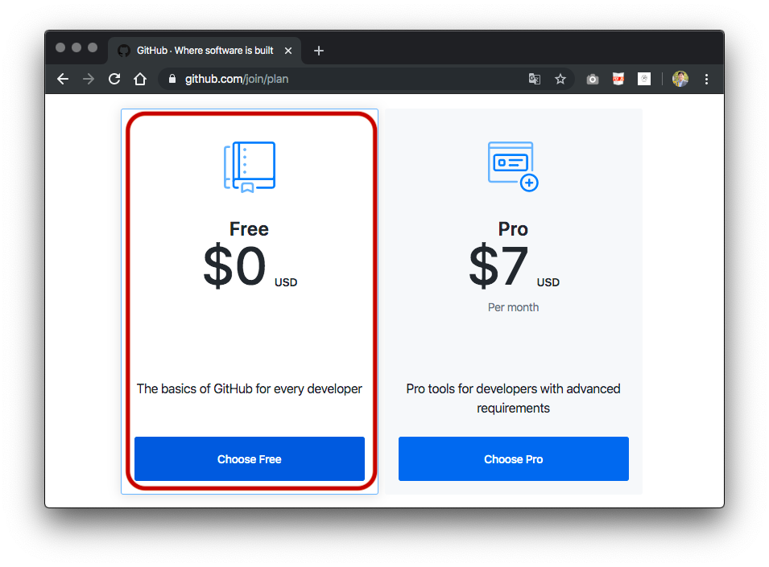
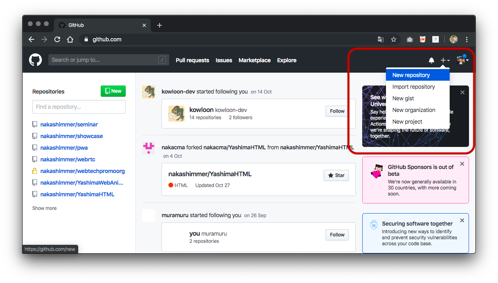
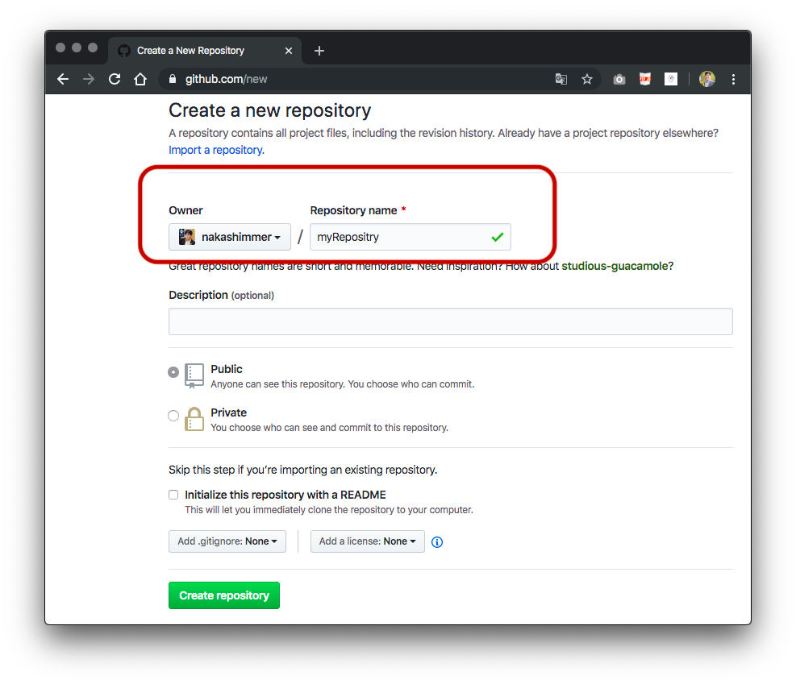
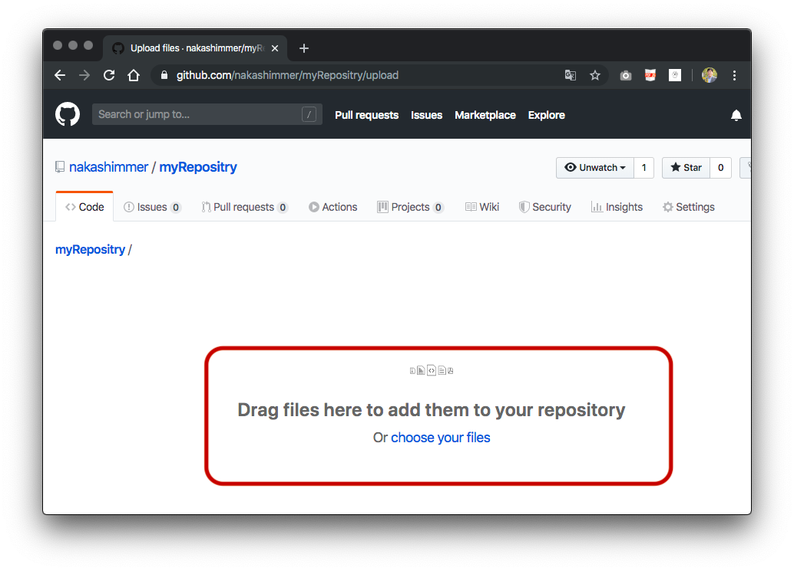
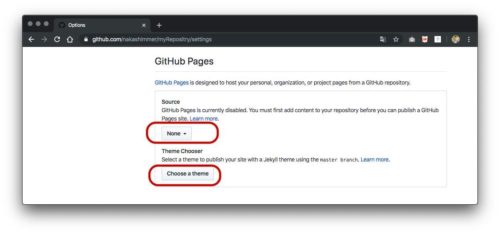

GitHub PagesによるWebサイト公開
Github pageの使用方法は次のとおりです。
1. アカウント
- ② 「Choose your subscriptuin」は「Free」で構わない) 
- ③ アンケートは飛ばしてもかまわない。
- ④ メール認証があるのでメールを確認して認証する。
2. リポジトリ(=貯蔵庫)の作成
- ① 画面右上のプラスアイコン「+」をクリックし、「New repository」を選択 
- ② 「Repository name」欄にリポジトリ名を入力して「Create repository」をクリック 
- ③ 「uploading an existing file」を押す。

3. ファイルのアップロード
- ①「Upload files」をクリックし、ファイルをドラッグアンドドロップでアップロード
- ②Commit changesの記入欄に変更の内容を記載して「Commit changes」ボタンをクリック。
- ③サイトの最初のファイル名は「index.html」とすること。 
4. Webページ公開
- ① 「Settings」をクリックしてページ下部「GitHub Pages」項目の「Sorce」の値を「main」に変更して「Save」 
- ② WebサイトのURLは「Your site is published at 」に表示されている。